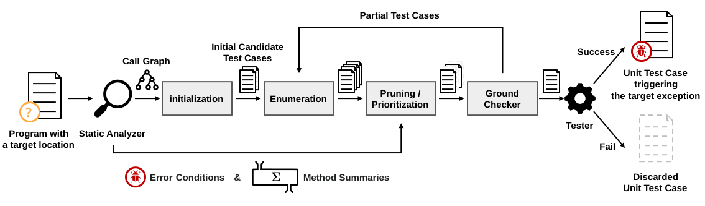

UnitCon: Synthesizing Targeted Unit Tests for Java Runtime Exceptions
We present UnitCon, a system for synthesizing targeted unit tests to trigger runtime exceptions in Java programs. Unlike existing tools that focus on code coverage, UnitCon uses static analysis to prune and prioritize the search space, enabling efficient discovery of exception-triggering tests. Applied to 51 open-source projects, UnitCon found 21 previously unknown null pointer exception (NPE) bugs.
Overview of UnitCon
The overall structure of UnitCon is illustrated below.
The following explains the gray boxes in the figure above.Initialization
For the given target program location. UnitCon first the error entry methods using the call graph derived by the static analyzer. Then UnitCon generates an initial set of partial test cases each of which calls an error entry methods. Such partial test cases are written in a domain-specific language that we designed for the synthesis.Enumeration
Given a set of partial test cases, UnitCon enumerates new partial unit tests by expanding the placeholders.Pruning & Prioritization
To improve the efficiency, we guide the search using static analysis results.Pruning
UnitCon effectively prunes the search space by comparing the semantics between partial test cases. If two partial test cases are deemed to be semantically equivalent by the static analyzer, UnitCon discards the larger one.Prioritization
UnitCon effectively prioritizes the partial test cases that are more likely to trigger the target error. For a given target program location, the static analyzer estimates sufficient conditions for the target error. During the synthesis, UnitCon checks if the partial test case can potentially satisfy the error conditions. If so, UnitCon prioritizes the partial test case.Ground Checker
It checks whether UnitCon has generated an executable test case. If it fails to generate one, the synthesis process is repeated. If an executable test case is generated, it is executed using the Tester to check whether the targeted exception is triggered. If the targeted exception is successfully reproduced, the test case is returned; otherwise, it is discarded.Our Bug Reports
We experimented to find Null Pointer Exception bugs in 51 popular libraries, and reported 21 bugs to the maintainers of each library. Of these, 15 reports have been patched, 4 reports are still open, and 2 reports were rejected. The table below lists the reported bugs.| Project | Report |
|---|---|
| Activiti | Issue 4553 (Open) |
| Apache Commons BCEL | Issue 289 (Patched) |
| Apache Commons Configuration |
Issue 355 (Patched)
,
Issue 365 (Patched)
,
Issue 368 (Patched)
Issue 381 (Patched) , Issue 382 (Rejected) |
| Apache Commons DBCP | Issue 352 (Patched) |
| Apache Commons IO | Issue 569 (Rejected) |
| Apache Commons Math | Issue 236 (Open) |
| Apache Johnzon | Issue 117 (Patched) , Issue 123 (Patched) |
| Apache Karaf | Issue 1825 (Patched) , Issue 1826 (Patched) |
| Apache PDFBox | Issue 178 (Patched) |
| Apache TsFile | Issue 50 (Open) |
| Feign | Issue 2304 (Patched) |
| JSqlParser | Issue 1965 (Patched) |
| Kubernetes Java Client | Issue 3081 (Patched) |
| Nutz | Issue 1613 (Open) |
| OpenGrok | Issue 4542 (Patched) |